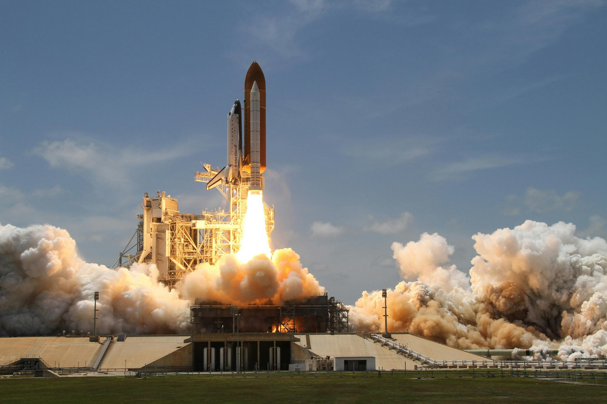
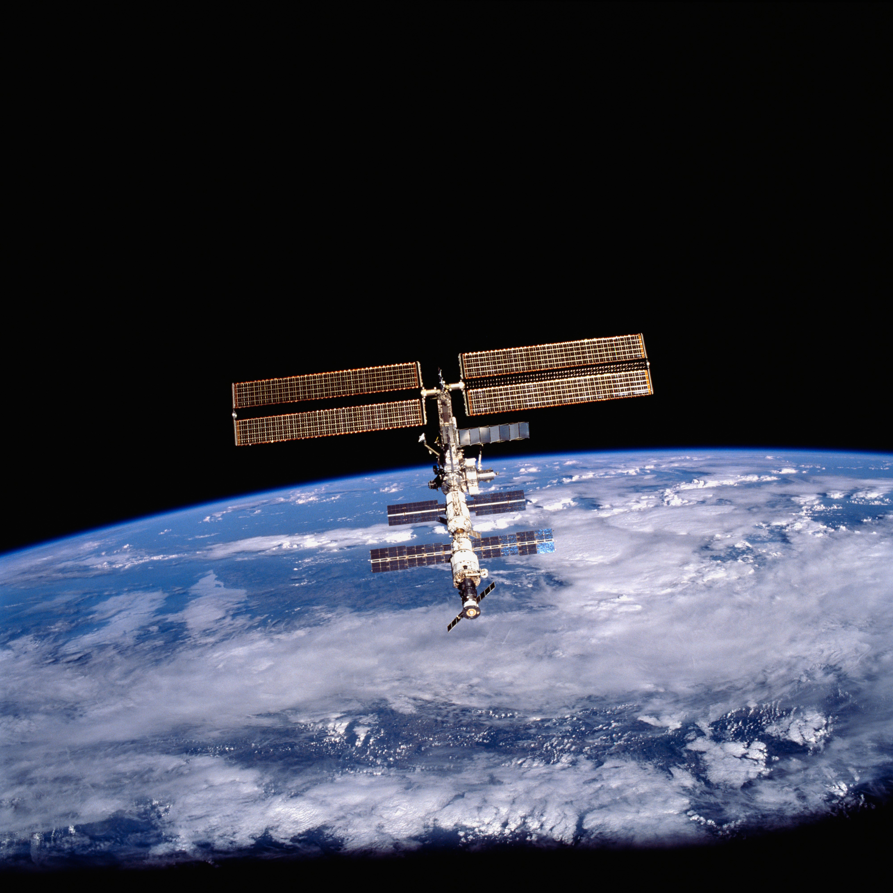

If you could go anywhere, why not go to space!
(If you have been here before you can
jump to the Packing List)

Space is, arguably, one of the closest travel destinations to a majority
of people on Earth. It is only about 62 miles away (100km) at any given
time. It is also the absolute largest travel destination in
existence!
If you would like a reference to the ridiculous size of
space, I recommend Neal.fun's
Size of Space
interactive website!
